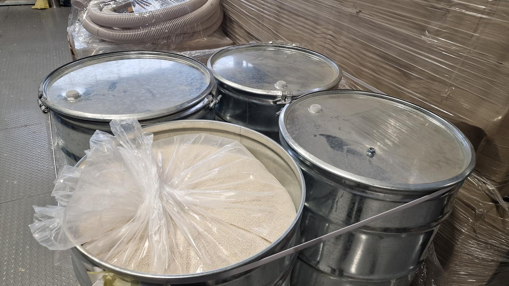

Plastic dryer service
Bydgoszcz, northern Poland and all of Poland
We service plastic dryers and auxiliary equipment in injection moulding plants. We replace molecular sieves and confirm the result with a dew point measurement, so that granulate reaches the machine properly dried.

Scope of dryer service
We look for the cause of the fault, not just the symptom, so that the machine gets back to work and does not stop again. We take measurements at the machine, and we can make missing parts ourselves.
- Plastic dryer servicing and repair
- Sale of original molecular sieves
- Molecular sieve replacement and drying process regeneration
- Dew point measurement before and after service
- Service of feeders and other auxiliary equipment
- Repair of injection mould turnover machines
Brands we service
Motan dryer service
We replaced the molecular sieves in 5 Motan dryers for a leading plastic products manufacturer in the Kuyavian-Pomeranian region, almost 500 kg of desiccant in total.
Piovan dryer service
We service Piovan dryers and auxiliary equipment: diagnostics, molecular sieve replacement, dew point measurement and repairs.
Service area
Our head office is in Bydgoszcz. We serve plastics processing plants all over Poland, most often in the north and centre of the country: in the Kuyavian-Pomeranian region (Bydgoszcz, Toruń, Grudziądz, Włocławek, Inowrocław), Pomerania (Gdańsk, Gdynia, Słupsk), Warmia-Masuria (Olsztyn, Elbląg) and Greater Poland (Poznań, Piła).
Selected projects
All


Machine down?
Call us or describe the problem. We will reply and agree the next steps.